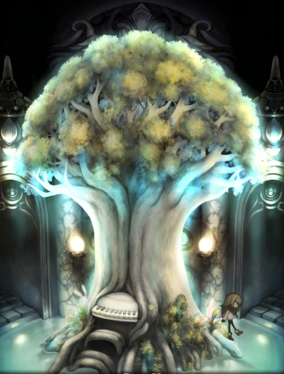
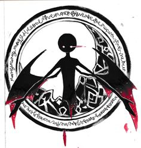
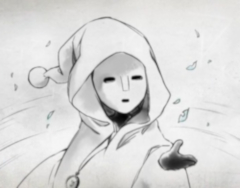
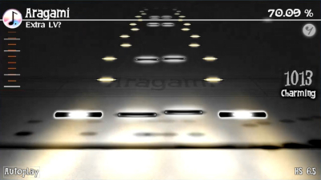
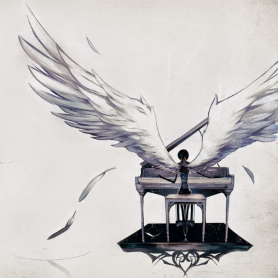
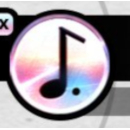
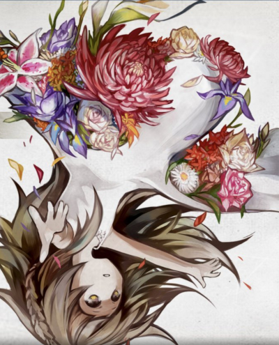

---概要---
Deemoとは...？ |
|
|
Cytusを開発した台湾のゲーム会社Rayark（レイアーク）が世に送り出したゲーム。 画面奥から流れてくるノーツがラインと合わさった時にタイミングよくタッチしてピアノを奏でていくことでゲームが進行していく。 音楽ゲームに詳しい人ならSOUND VOLTEXをイメージするのが早いだろうか。 |
|
|
定価は240円。追加で楽曲を買う場合、5～6曲につき480円かかる。 ただし、auのAndroid端末だけは追加楽曲含め全て無料である (※auスマートパス加入者のみ)。 |
|
|
本作の特徴として音ゲーにしては珍しくストーリーが備わっている。 最初は1曲しか遊べないが、曲を演奏していきストーリーを見る度に楽曲が増えていく。 |
ストーリー |
 |
|
Deemoは、とある城の中で孤独な生活を送っている、謎めいた存在。 ある日、空から、自分がどこから来たのか、誰なのかすら覚えていない、一人の少女が落ちてきました。 彼女を空の上の、元いた世界に帰してあげるために、Deemoはピアノを弾くたびに伸びていく木を見つけますが…。 |
|
|
初めて経験する人との友情、そして、彼女のぬくもりを感じたとき、Deemoはどうなるのでしょうか？ 失った記憶を取り戻し、その事実を受け入れることができなかったとしたら、少女は一体どうなるのでしょうか…？ |
キャラクター
|  |
Deemo 本作の主人公（？）。本編開始時点で既に舞台となる部屋にいた。 おいてあるピアノを彼が奏でる度に、 部屋中央に植えられていた樹が成長していく。 無口...というか少なくともゲーム内では一切言葉を発しない。 |
|
少女 本作のヒロイン（？）。物語冒頭で部屋の天井にある窓から落ちてきた。 窓から落ちてくる以前の記憶を全て失っている。Deemoが弾くピアノの音が好きなようだ。 Deemoが無口な分いろいろ喋る。部屋のいろんな物に反応してくれるのでどんどんタップして調べよう。 曲のジャケットによって多くのコスプレ姿を見ることができる、少女かわいいよ少女。 |
|
|  |
仮面の女 部屋の一つである図書室にいる女。仮面によってその表情は読み取れない。 どうやら樹の成長を快く思っていないようだが...? |
---システム---
ノーツ
ノーツは2種類、どちらもタッチで取る。
|  |
黒いノーツ ラインと重なり合った時にタッチするとピアノの音が流れる。 ノーツの中央が白くなっているものはピアノの音以外の音が割り当てられている。 |
|
白いノーツ 白く発光しているノーツ。 連続してる部分では最初のノーツをタッチした後はタイミングよくスライドするだけでとれる。 |
評価 |
 |
|
本作ではノーツをどれだけ正確にミスせずにとれたかをパーセンテージにして表す。 クリアまでの評価は曲や難易度によって変わるが、だいたい60％前後だと言われている。 |
|
|
ノーツを全て取りこぼさずに演奏できると「Full Combo」 すべてのノーツを正確に取り100％になると「All Charming」の評価がもらえる。 |
|
| ノーツが同時に3つ以上落ちてくる親指勢殺しの曲もあるので親指勢は要注意。 |
小ネタ
-

選曲画面の音符をタッチするとその度に難易度が変わる。
Easyが4分音符、Normalが8分音符、Hardが16分音符、Extraが付点8分音符のアイコンである。 -
選曲後の画面でノーツが降ってくる速度を変えることができる。
初期設定は5.0

|
スコアをTwitterやFacebookにシェアすることができる。 このときただスコアが投稿されるだけでなく、曲ごとに少女のコメントがいっしょについてくる。 他愛のない一言もあれば本作の設定に深く関わりそうな一文も。 |
---おすすめ曲---
nine point eight(compser Mili)
LEVEL
Easy 1 Normal 5 Hard 7
|  |
Miliさんの曲は優しげな曲が多くてとても魅力的です しかもLEVELも高くないのでplayしやすいので おすすめします |